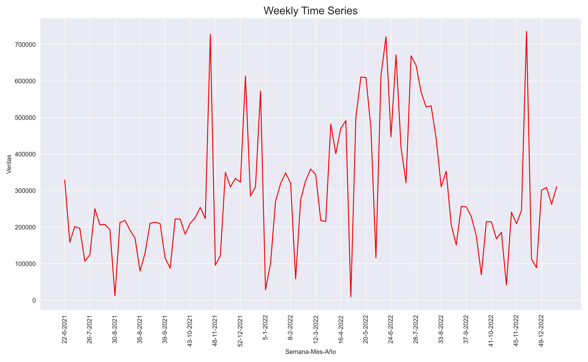
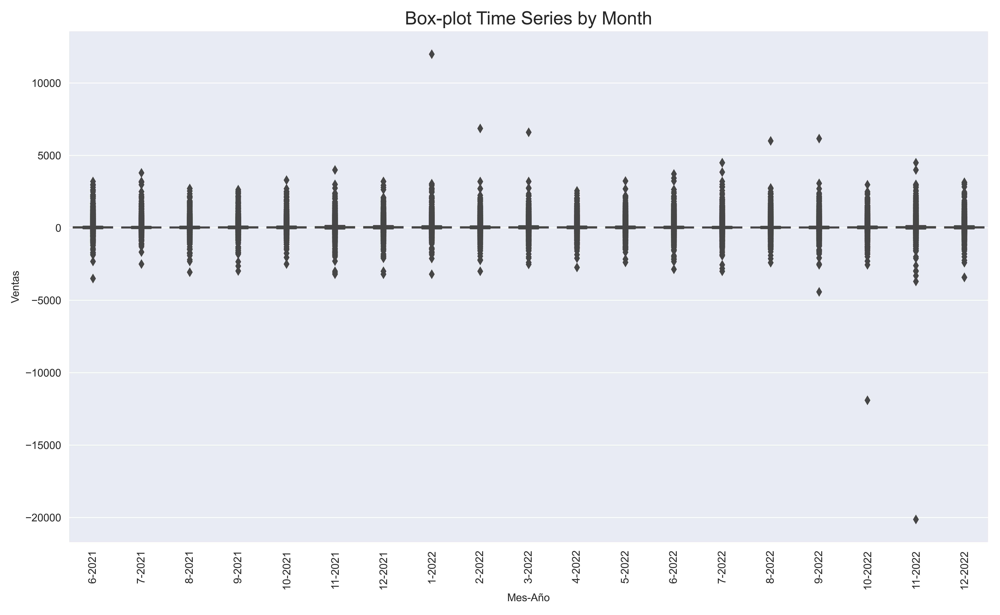

Chapter 3 Visualizing Time Series in Python
In this section we are going to visualize our time series using different periodicities.
3.1 Monthly Time Series
We use groupby to group the time series by year and month, and then calculate the sum of the Ventas column for each of those groups.
Monthly_Time_Series_1 = Time_Series_1.groupby(['Año', 'Mes'])['Ventas'].sum().reset_index(drop=False)We change the Año (year) and Mes (month) columns to string format, and then we create the Mes-Año (month-year) column. All this is needed for the posterior visualization.
Monthly_Time_Series_1['Año'] = Monthly_Time_Series_1['Año'].astype('string')
Monthly_Time_Series_1['Mes'] = Monthly_Time_Series_1['Mes'].astype('string')
Monthly_Time_Series_1['Mes-Año'] = Monthly_Time_Series_1[['Mes', 'Año']].agg('-'.join, axis=1)Monthly_Time_Series_1| Año | Mes | Ventas | Mes-Año | |
|---|---|---|---|---|
| 0 | 2021 | 6 | 992891.50 | 6-2021 |
| 1 | 2021 | 7 | 982142.75 | 7-2021 |
| 2 | 2021 | 8 | 885289.16 | 8-2021 |
| 3 | 2021 | 9 | 878563.14 | 9-2021 |
| 4 | 2021 | 10 | 923552.45 | 10-2021 |
| 5 | 2021 | 11 | 1527486.61 | 11-2021 |
| 6 | 2021 | 12 | 1438722.72 | 12-2021 |
| 7 | 2022 | 1 | 1910816.46 | 1-2022 |
| 8 | 2022 | 2 | 1317501.34 | 2-2022 |
| 9 | 2022 | 3 | 1524652.47 | 3-2022 |
| 10 | 2022 | 4 | 2060509.71 | 4-2022 |
| 11 | 2022 | 5 | 2316733.47 | 5-2022 |
| 12 | 2022 | 6 | 2872219.23 | 6-2022 |
| 13 | 2022 | 7 | 2731251.02 | 7-2022 |
| 14 | 2022 | 8 | 1844222.02 | 8-2022 |
| 15 | 2022 | 9 | 1068975.95 | 9-2022 |
| 16 | 2022 | 10 | 895735.29 | 10-2022 |
| 17 | 2022 | 11 | 1544511.61 | 11-2022 |
| 18 | 2022 | 12 | 1272814.69 | 12-2022 |
Now we create a monthly time series plot using Seaborn.
fig, ax = plt.subplots(figsize=(13,8))
p=sns.lineplot(x="Mes-Año", y="Ventas", data=Monthly_Time_Series_1 , color='red')
plt.setp(p.get_xticklabels(), rotation=90)
plt.title("Monthly Time Series", fontsize = 17)
plt.tight_layout()
fig.savefig('p1.jpg', format='jpg', dpi=500)
plt.show()
3.2 Daily Time Series
We use groupby to group the time series by year, month and day, and then calculate the sum of the Ventas column for each of those groups.
Daily_Time_Series_1 = Time_Series_1.groupby(['Año', 'Mes','Dia'])['Ventas'].sum().reset_index(drop=False)We change the Año (year), Mes (month) and Dia (day) columns to string format, and then we create the Mes-Año-Dia (month-year-day) column. All this is needed for the posterior visualization.
Daily_Time_Series_1['Año'] = Daily_Time_Series_1['Año'].astype('string')
Daily_Time_Series_1['Mes'] = Daily_Time_Series_1['Mes'].astype('string')
Daily_Time_Series_1['Dia'] = Daily_Time_Series_1['Dia'].astype('string')
Daily_Time_Series_1['Dia-Mes-Año'] = Daily_Time_Series_1[['Dia', 'Mes', 'Año']].agg('-'.join, axis=1)Daily_Time_Series_1| Año | Mes | Dia | Ventas | Dia-Mes-Año | |
|---|---|---|---|---|---|
| 0 | 2021 | 6 | 1 | 26423.78 | 1-6-2021 |
| 1 | 2021 | 6 | 2 | 18752.01 | 2-6-2021 |
| 2 | 2021 | 6 | 3 | 22812.84 | 3-6-2021 |
| 3 | 2021 | 6 | 4 | 107889.11 | 4-6-2021 |
| 4 | 2021 | 6 | 5 | 136714.44 | 5-6-2021 |
| … | … | … | … | … | … |
| 574 | 2022 | 12 | 27 | 64542.49 | 27-12-2022 |
| 575 | 2022 | 12 | 28 | 59913.84 | 28-12-2022 |
| 576 | 2022 | 12 | 29 | 53815.43 | 29-12-2022 |
| 577 | 2022 | 12 | 30 | 52695.32 | 30-12-2022 |
| 578 | 2022 | 12 | 31 | 39739.67 | 31-12-2022 |
Now we create a daily time series plot using Seaborn.
fig, ax = plt.subplots(figsize=(13,8))
p=sns.lineplot(x="Dia-Mes-Año", y="Ventas", data=Daily_Time_Series_1 , color='red')
p.set_xticks(np.arange(0 , len(Daily_Time_Series_1) , 40))
plt.setp(p.get_xticklabels(), rotation=90)
plt.title("Daily Time Series", fontsize = 17)
plt.tight_layout()
fig.savefig('p2.jpg', format='jpg', dpi=500)
plt.show()
3.3 Weekly Time Series
We use groupby to group the time series by year, month and week, and then calculate the sum of the Ventas column for each of those groups.
Weekly_Time_Series_1 = Time_Series_1.groupby(['Año', 'Mes','Semana'])['Ventas'].sum().reset_index(drop=False)We change the Año (year), Mes (month) and Semana (week) columns to string format, and then we create the Semana-Mes-Año (week-month-year) column. All this is needed for the posterior visualization.
Weekly_Time_Series_1['Año'] = Weekly_Time_Series_1['Año'].astype('string')
Weekly_Time_Series_1['Mes'] = Weekly_Time_Series_1['Mes'].astype('string')
Weekly_Time_Series_1['Semana'] = Weekly_Time_Series_1['Semana'].astype('string')
Weekly_Time_Series_1['Semana-Mes-Año'] = Weekly_Time_Series_1[['Semana', 'Mes', 'Año']].agg('-'.join, axis=1)Weekly_Time_Series_1| Año | Mes | Semana | Ventas | Semana-Mes-Año | |
|---|---|---|---|---|---|
| 0 | 2021 | 6 | 22 | 329029.82 | 22-6-2021 |
| 1 | 2021 | 6 | 23 | 158833.59 | 23-6-2021 |
| 2 | 2021 | 6 | 24 | 201568.21 | 24-6-2021 |
| 3 | 2021 | 6 | 25 | 196610.74 | 25-6-2021 |
| 4 | 2021 | 6 | 26 | 106849.14 | 26-6-2021 |
| … | … | … | … | … | … |
| 94 | 2022 | 12 | 48 | 89144.45 | 48-12-2022 |
| 95 | 2022 | 12 | 49 | 301484.19 | 49-12-2022 |
| 96 | 2022 | 12 | 50 | 308829.59 | 50-12-2022 |
| 97 | 2022 | 12 | 51 | 262326.49 | 51-12-2022 |
| 98 | 2022 | 12 | 52 | 311029.97 | 52-12-2022 |
Now we create a weekly time series plot using Seaborn.
fig, ax = plt.subplots(figsize=(13,8))
p=sns.lineplot(x="Semana-Mes-Año", y="Ventas", data=Weekly_Time_Series_1 , color='red')
p.set_xticks(np.arange(0 , len(Weekly_Time_Series_1) , 5))
plt.setp(p.get_xticklabels(), rotation=90)
plt.title("Weekly Time Series", fontsize = 17)
plt.tight_layout()
fig.savefig('p3_1.jpg', format='jpg', dpi=500)
plt.show()
3.4 Quarterly Time Series
We use groupby to group the time series by year, month and week, and then calculate the sum of the Ventas column for each of those groups.
Quarter_Time_Series_1 = Time_Series_1.groupby(['Año', 'Trimestre'])['Ventas'].sum().reset_index(drop=False)We change the Año (year) and Trimestre (quarter) columns to string format, and then we create the Trimestre-Año (quarter-year) column. All this is needed for the subsequent visualization.
Quarter_Time_Series_1['Año'] = Quarter_Time_Series_1['Año'].astype('string')
Quarter_Time_Series_1['Trimestre'] = Quarter_Time_Series_1['Trimestre'].astype('string')
Quarter_Time_Series_1['Trimestre-Año'] = Quarter_Time_Series_1[['Trimestre', 'Año']].agg('-'.join, axis=1)Quarter_Time_Series_1| Año | Trimestre | Ventas | Trimestre-Año | |
|---|---|---|---|---|
| 0 | 2021 | 2 | 992891.50 | 2-2021 |
| 1 | 2021 | 3 | 2745995.05 | 3-2021 |
| 2 | 2021 | 4 | 3889761.78 | 4-2021 |
| 3 | 2022 | 1 | 4752970.27 | 1-2022 |
| 4 | 2022 | 2 | 7249462.41 | 2-2022 |
| 5 | 2022 | 3 | 5644448.99 | 3-2022 |
| 6 | 2022 | 4 | 3713061.59 | 4-2022 |
As before, we create a quarterly time series plot using Seborn.
fig, ax = plt.subplots(figsize=(13,8))
p=sns.lineplot(x="Trimestre-Año", y="Ventas", data=Quarter_Time_Series_1 , color='red')
p.set_xticks(np.arange(0 , len(Quarter_Time_Series_1) , 1))
plt.setp(p.get_xticklabels(), rotation=90)
plt.title("Quarter Time Series", fontsize = 17)
plt.tight_layout()
fig.savefig('p4.jpg', format='jpg', dpi=500)
plt.show()
3.5 Yearly Time Series
To visualize this case, we will use a new time series data-set which takes more years into account.
Time_Series_2 = pd.read_csv('Time_Series_2.csv')We will apply the same preprocessing steps to this dataset as we did to the previous one.
Time_Series_2['Fecha'] = pd.to_datetime(Time_Series_2['Fecha'])
Time_Series_2['Dia'] = Time_Series_2['Fecha'].dt.day
Time_Series_2['Semana'] = Time_Series_2['Fecha'].dt.week
Time_Series_2['Mes'] = Time_Series_2['Fecha'].dt.month
Time_Series_2['Trimestre'] = Time_Series_2['Fecha'].dt.quarter
Time_Series_2['Año'] = Time_Series_2['Fecha'].dt.year
Yearly_Time_Series_2['Año'] = Yearly_Time_Series_2['Año'].astype('string')
Time_Series_2.loc[:,['Importe', 'Fecha', 'Dia', 'Semana', 'Mes', 'Trimestre', 'Año']]
Yearly_Time_Series_2 = Time_Series_2.groupby(['Año'])['Importe'].sum().reset_index(drop=False)Yearly_Time_Series_2| Año | Importe | |
|---|---|---|
| 0 | 2018 | 20584.6 |
| 1 | 2019 | 52704.3 |
| 2 | 2020 | 81690.1 |
| 3 | 2021 | 97683.5 |
| 4 | 2022 | 95286.3 |
Now, we create a yearly time series plot using the new data-set and Seborn:
fig, ax = plt.subplots(figsize=(13,8))
p=sns.lineplot(x="Año", y="Importe", data=Yearly_Time_Series_2 , color='red')
p.set_xticks(np.arange(0 , len(Yearly_Time_Series_2) , 1))
plt.setp(p.get_xticklabels(), rotation=90)
plt.title("Yearly Time Series", fontsize = 17)
plt.tight_layout()
fig.savefig('p5.jpg', format='jpg', dpi=500)
plt.show()
3.6 Box-plot by month
In this subsection we are going to show a different type of time series plot. It consists of graphing the response variable (Ventas) by groups with a box-plot. In this case we will use the month as the variable through which the response is grouped.
This is the same way of proceeding as when we have a quantitative variable grouped by the categories of a categorical variable, and we plot them with multiple box-plots.
Time_Series_1_copy = Time_Series_1.copy()To obtain a better visualization we must do some operations to order the date labels of the x-axis of our plot.
Time_Series_1_copy['Año'] = Time_Series_1_copy['Año'].astype('string')
Time_Series_1_copy['Mes'] = Time_Series_1_copy['Mes'].astype('string')
Time_Series_1_copy['Mes-Año'] = Time_Series_1_copy[['Mes', 'Año']].agg('-'.join, axis=1)from datetime import datetime
Mes_Año = Time_Series_1_copy['Mes-Año'].unique()
Mes_Año_dt = [datetime.strptime(x, '%m-%Y') for x in Mes_Año]
Mes_Año_dt_sorted = sorted(Mes_Año_dt)
Mes_Año_dt_sorted = [datetime.strftime(x, '%m-%Y') for x in Mes_Año_dt_sorted]
Mes_Año_dt_sorted_sin_ceros = [x.lstrip('0') if x.startswith('0') else x for x in Mes_Año_dt_sorted]Now, we make a time series box-plot using Seborn:
fig, ax = plt.subplots(figsize=(13,7))
p1 = sns.boxplot(x="Mes-Año", y="Ventas", data=Time_Series_1_copy, order=Mes_Año_dt_sorted_sin_ceros, showfliers=True)
plt.setp(p1.get_xticklabels(), rotation=90)
plt.title("Box-plot Time Series by Month", fontsize = 17)
fig.savefig('pbox1.jpg', format='jpg', dpi=500)
plt.show()
As you can see, there are so many outliers that we cannot even see the box-plot clearly. To avoid this problem we can exclude outliers setting the parameter showfliers to False.
fig, ax = plt.subplots(figsize=(13,7))
p1 = sns.boxplot(x="Mes-Año", y="Ventas", data=Time_Series_1_copy, order=Mes_Año_dt_sorted_sin_ceros, showfliers=False)
plt.setp(p1.get_xticklabels(), rotation=90)
plt.title("Box-plot Time Series by Month", fontsize = 17)
fig.savefig('pbox2.jpg', format='jpg', dpi=500)
plt.show()